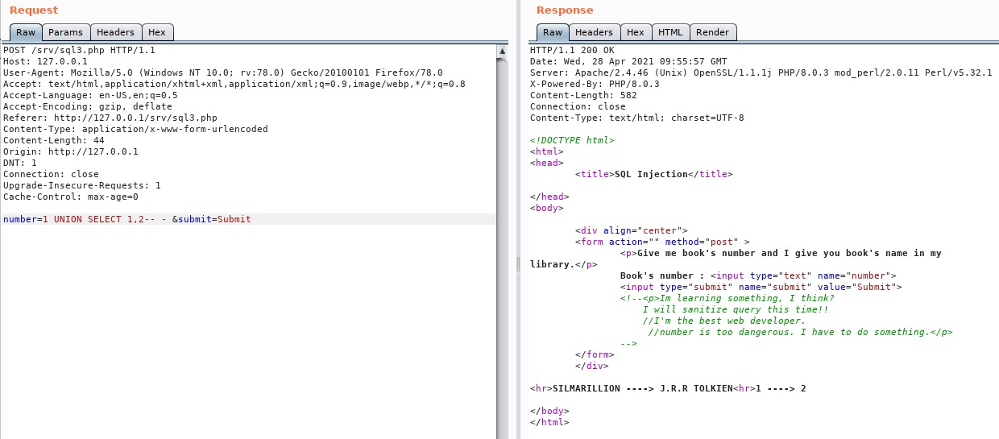

SQL INJECTION
SQL Injections:
SQL injection is a kind of injection attack which that allows an attacker to interfere with the queries that an application makes to its database. An SQL Injection vulnerability may affect any website or web application that uses an SQL database such as MySQL, Oracle, SQL Server, or others. Criminals may use it to gain unauthorized access to your sensitive data: customer information, personal data, trade secrets, intellectual property, and more. SQL Injection attacks are one of the oldest, most prevalent, and most dangerous web application vulnerabilities. The OWASP organization (Open Web Application Security Project) lists injections in their OWASP Top 10 2017 document as the number one threat to web application security.
For example, consider the following code example where a simple authentication occurs with a username and a password.
The username and password are supplied to the application and the database query gets executed to retrieve the information. But an attacker can supply a malformed query which gives rise to a SQL injection attack.
Here, an attacker can inject a single quote (') character in the username or password field which ends the query. Along with the quote, the attacker can pass a boolean condition like: username' OR 1=1- - -. This alters the flow of the database query and returns true as 1 is equal to one. The executed query becomes
SELECT id FROM users WHERE username='username' OR 1=1 - - -' AND password='password'
This is a simple SQL injection Login Bypass attack.
There are more attacks which we will see in different levels.
Level 1:
In this very first level, we will try to read secret information from the database. The login bypass is not very common these days so we will directly jump to database dumping.
Lets start. This level provides a input form where we supply a First name and we get the last name of the person. Let us try john as shown in the example. We get Doe as the lastname. Now let us try to inject a single quote to see if this errors out.
We get a mysql error. This means this application is vulnerable to SQL injection. Now we will try to balance the query and comment out the code after the injection. There are various ways to comment out the code such as a # sign, a - - - string, etc. Here we will use - - - string.
We get no error and the query gets executed. Half of our work is done at this point.
Now we need to check the number of columns in the database. This is done so that we can inject our next query that is a union select statement. For union select statement to execute, we need a number of columns to select. To find the number of columns, we use the order by statement. Order by statement arranges the columns in ascending or descending order in respect to the column provide. We inject "order by n" where n is the number of columns. We increment or decrement according to the error thrown. When we don't get any error, we can conclude that the database has n columns.
The sample injection query in our scenario will be John' order by 10 – -
Let us try this.

As we can see, we get an error. This means this database does not have 10 columns. Now we can decrement the number like order by 5, order by 3 and narrow down our search to a point where we do not get an error.
When we reach at 1, we see the error is not thrown and we get our result back.
This concludes that the database has 1 column. Now that we have a column number. We can start injecting our payload that is a union statement.
The SQL UNION operator is used to combine the result sets of 2 or more SELECT statements.
As we have a single column, we only need to select a single column.
The sample payload will be: John' union all select 1 – -
As we see, the query is executed properly and we get a number printed on the screen. This means that column 1 is vulnerable to injection. Now all we need to do is start our database query and get desired results. First we can try checking database version by replacing the number 1 in union statement with mysql command version().
As we can see we get the database version. Now we can start dumping the database. First we need a table name. So we will inject a mysql statement to find the table name.
The query will be:
John' union select table_name from information_schema.tables where table_schema=database() – -
We can see that we get table names that exist in the database. Now we have to find column names in the database.
For this, we will use the query:
John' union select column_name from information_schema.columns where table_schema=database() – -
We get all the column names. We already have table names. All that is left now is to dump the database. As we need to know which columns belong to which table, we can include a condition in the select statement and specify a table name such as
John' union select column_name from information_schema.columns where table_schema=database() and table_name=secret-- -
This query will only columns in the table secret.
We can see that there are two columns named username and password.
To read data inside, we can use select statement like
John' union select username from secret – -
and to read the password we can use John' union select password from secret – -
We can also use a group_concat() function to read multiple columns and display the result at once.
John' union select group_concat(username,":",password) from secret – -
We have successfully dumped the username and password from the secret table. And this concludes out sql level 1.
Level 2:
In this level, we are provided with a book finder menu. We enter a number and the corresponding book is displayed. Our goal is to dump the database. So let us begin.
Open the SQL Exercise 1 in your web browser.
It's asking user to enter the book number. Let's write the number "1" in the search field.
As you can see, when we search for the number "1" It showed us the book which has the value of book number : 1.
Now in order to test for the SQL Injection , let's fire up BurpSuite and then try to break the SQL query using single quote and capture the request in burp,
As we can see this time we didn't see the book name and it's author's name. Now it's due to the fact that the SQL Query is broke using that single quote. Now let's try to fix the query using comments , in this case I am going to use something like this.
Number=1'-- -
This time we do receive the book name and it's author name, now the next step is to find the total number of columns. For that we are going to use the "ORDER BY" statement.
As you can see in the picture above that we didn't retrieve the book name, let's try to decrease the number of column from 3to 2 ,
Amazing! Now we can see that this time we did see the book name. Now we know that there are total two number of column, lets try to find which one is vulnerable and for that we are going to use UNION SELECT query.
We can see that both the number 1 and 2 is displaying on the screen, which means both of them are vulnerable, and we can use either of them to dump the whole database. But for now we will first try to dump the tables name first
1' UNION SELECT group_concat(table_name),2 from information_schema.tables where table_schema=database()-- -
We can see that there are total 4 number of columns in the database, now lets try to retrieve all the columns name.
1' UNION SELECT group_concat(column_name),2 from information_schema.columns where table_schema=database()-- -
Now we can see that there are a lot of columns present in the database, well for the completion of this exercise we need to get the flag, so the column name: flag seems good. Lets see what data is stored inside that column,
Amazing we got the flag, but to show the impact of this vulnerability let's dump the username along with it's password.
As you can see we dumped the username and password that is present in the database of this lab.
Level 3:
Open the SQL Exercise 3 in your web browser.
It's asking user to enter the book number. Let's write the number "1" in the search field.
As you can see, when we search for the number "1" It showed us the book which has the value of book number : 1.
Now in order to test for the SQL Injection , let's fire up BurpSuite and then try to break the SQL query using single quote and capture the request in burp,
As we can see this time we didn't see the book name and it's author's name. Now it's due to the fact that the SQL Query is broke using that single quote. Now let's try to fix the query using comments , in this case I am going to use something like this.
Number=1'-- -
This time we did not received the book name as we did in previous exercise. Now lets try a different payload.
Number=1-- -
This time we receive the book name and it's author name, now the next step is to find the total number of columns. For that we are going to use the "ORDER BY" statement.
As you can see in the picture above that we didn't retrieve the book name, let's try to decrease the number of column from 3 to 2 ,
Amazing! Now we can see that this time we did see the book name. Now we know that there are total two number of column, lets try to find which one is vulnerable and for that we are going to use UNION SELECT query.

We can see that both the number 1 and 2 is displaying on the screen, which means both of them are vulnerable, and we can use either of them to dump the whole database. But for now we will first try to dump the tables name first
1' UNION SELECT group_concat(table_name),2 from information_schema.tables where table_schema=database()-- -
We can see that there are total 4 number of columns in the database, now lets try to retrieve all the columns name.
1' UNION SELECT group_concat(column_name),2 from information_schema.columns where table_schema=database()-- -
Now we can see that there are a lot of columns present in the database, well for the completion of this exercise we need to get the flag, so the column name: flag seems good. Lets see what data is stored inside that column,
Amazing we got the flag, but to show the impact of this vulnerability let's dump the username along with it's password.
As you can see we dumped the username and password that is present in the database of this lab.